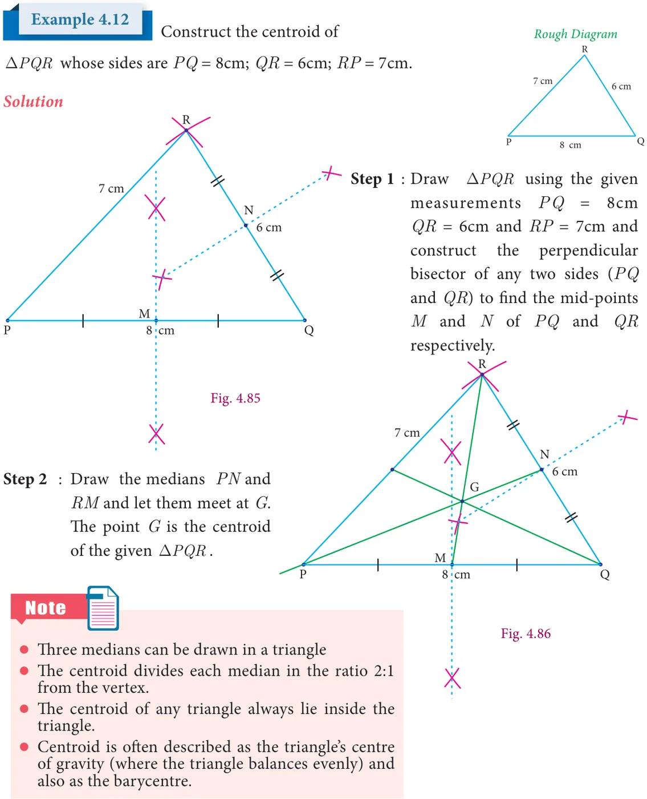
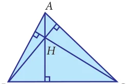

Practical geometry is the method of applying the rules of geometry dealt with the properties of points, lines and other figures to construct geometrical figures. “Construction” in Geometry means to draw shapes, angles or lines accurately. The geometric constructions have been discussed in detail in Euclid’s book ‘Elements’. Hence these constructions are also known as Euclidean constructions. These constructions use only compass and straightedge (i.e. ruler). The compass establishes equidistance and the straightedge establishes collinearity. All geometric constructions are based on those two concepts. It is possible to construct rational and irrational numbers using straightedge and a compass as seen in chapter II. In 1913 the Indian mathematical Genius, Ramanujam gave a geometrical construction for \(355/113 = \pi\) . Today with all our accumulated skill in exact measurements. it is a noteworthy feature that lines driven through a mountain meet and make a tunnel.In the earlier classes, we have learnt the construction of angles and triangles with the given measurements. In this chapter we are going to learn to construct Centroid, Orthocentre, Circumcentre and Incentre of a triangle by using concurrent lines.
4.7.1 Construction of the Centroid of a Triangle
Centroid

The point of concurrency of the medians of a triangle is called the centroid of the triangle and is usually denoted by G.

Activity 8
Objective To find the mid-point of a line segment using paper folding Procedure Make a line segment on a paper by folding it and name it PQ. Fold the line segment PQ in such a way that P falls on Q and mark the point of intersection of the line segment and the crease formed by folding the paper as M. M is the midpoint of PQ.

4.7.2 Construction of Orthocentre of a Triangle Orthocentre

The orthocentre is the point of concurrency of the altitudes of a triangle. Usually it is denoted by H.

Activity 9
Objective To construct a perpendicular to a line segment from an external point using paper folding.
Procedure Draw a line segment AB and mark an external point P. Move B along BA till the fold passes through P and crease it along that line. The crease, thus formed is the perpendicular to AB through the external point P.
Activity 10
Objective To locate the Orthocentre of a triangle using paper folding.
Procedure Using the above Activity with any two vertices of the triangle as external points, construct the perpendiculars to opposite sides. The point of intersection of the perpendiculars is the Orthocentre of the given triangle.
Example 4.13
Construct ΔPQR whose sides are \(PQ = 6\) cm \(+Q = 60^{0}\) and \(QR = 7\) cm and locate its Orthocentre. R
Solution
Step 1 Draw the ΔPQR with the given measurements. _{7cm}
R R P 6cm Q
7cm 7cm
P 6cm Q P 6cm Q
Fig. 4.88 Fig. 4.89
Step 2:
Construct altitudes from any two vertices (say) R and P, to their opposite sides PQ and QR respectively. The point of intersection of the altitude H is the Orthocentre of the given ΔPQR.

- 1.Construct the DLMN such that LM=7.5cm, MN=5cm and LN=8cm. Locate its
centroid.
- 2.Draw and locate the centroid of the triangle ABC where right angle at A, \(AB = 4cm\)
and \(AC = 3cm\).
- 3.Draw the DABC , where \(AB = 6cm\), \(\angle B = 110 ^{\circ}\) and \(AC = 9cm\) and construct the
centroid.
- 4.Construct the DPQR such that \(PQ = 5cm\), \(PR= 6cm\) and \(\angle QPR = 60 ^{\circ}\) and locate its
centroid.
- 5.Draw ΔPQR with sides \(PQ = 7\) cm, \(QR = 8\) cm and \(PR = 5\) cm and construct its
Orthocentre.
- 6.Draw an equilateral triangle of sides 6.5 cm and locate its Orthocentre.
- 7.Draw ΔABC, where \(AB = 6\) cm, \(+B = 110^{0}\) and \(BC = 5\) cm and construct its
Orthocentre.
- 8.Draw and locate the Orthocentre of a right triangle PQR where \(PQ = 4.5\) cm,
\(QR = 6\) cm and \(PR = 7.5\) cm.
4.7.3 Construction of the Circumcentre of a Triangle Circumcentre

The Circumcentre is the point of concurrency of the Perpendicular bisectors of the sides of a triangle. It is usually denoted by S.
Circumcircle
The circle passing through all the three vertices of the triangle with circumcentre (S) as centre is called circumcircle.